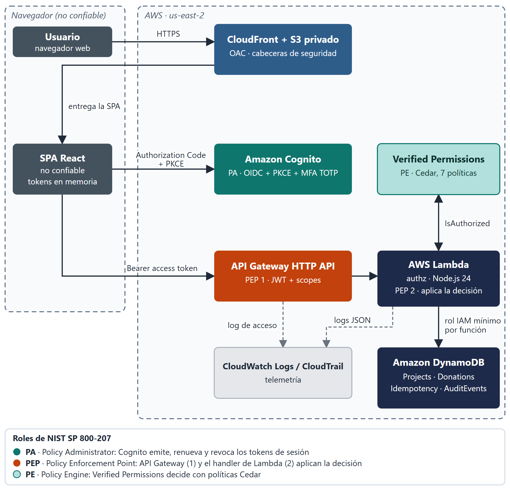
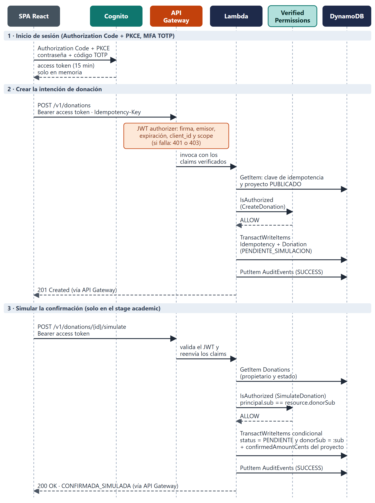
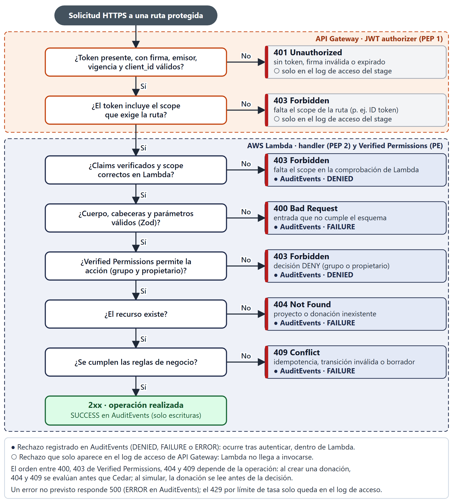
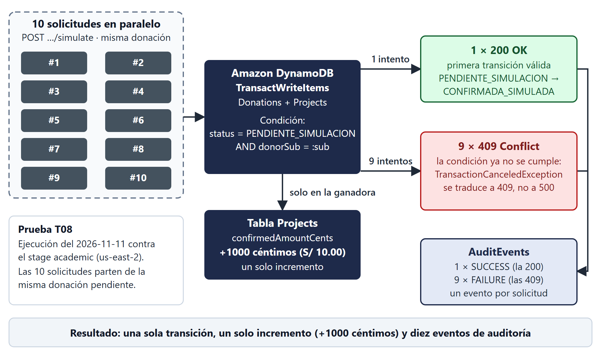
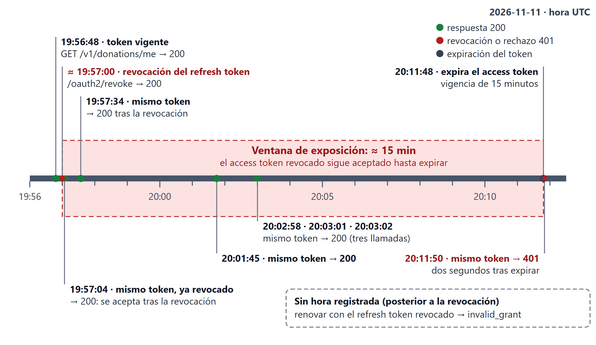

Este archivo reemplaza el contenido desactualizado del informe (redactado cuando solo estaba fusionado el primer pull request). Refleja la rama main en el commit ac24848 (cinco pull requests fusionados, #1 a #5). Para usarlo: abrir en el navegador, seleccionar todo, copiar y pegar en Google Docs; cada bloque con encabezado de nivel 1 sustituye al bloque equivalente. Si las imágenes no se pegan, insertarlas desde la carpeta figuras/.
Lo que el equipo debe completar o verificar antes de entregar:
[COMPLETAR POR EL EQUIPO]), y las tareas y aportes de ChatGPT, GitHub Copilot y Claude, que no constan en el repositorio. Confirmar además qué parte de los PR #3 y #5 fue asistida por IA (AI_USAGE.md describe de forma explícita los PR #1, #2 y #4).[CAPTURA PENDIENTE: ...]: desafío TOTP de un GESTOR (T14), pantalla «Borradores», vista de auditoría con filas DENIED/FAILURE, aviso de simulación y, además, CloudWatch con un caso exitoso y uno rechazado (CA-NF07.2).frontend/.env.example (archivo sin versionar generado por un agente; AI_USAGE.md lo declara pendiente de decisión humana).«Fundación AQP-SOLIDARIA» es una fundación peruana ficticia que publica proyectos sociales y recibe intenciones de donación. El laboratorio implementa una plataforma de donaciones simuladas sobre servicios serverless de AWS, con el modelo de seguridad Zero Trust de NIST SP 800-207 como eje, y demuestra los controles mediante pruebas negativas (T01–T14).
El alcance cubre las historias de usuario del MVP (HU-01 a HU-09 y HU-11) y las extensiones HU-10 (auditoría) y HU-12 (autorización externalizada con Amazon Verified Permissions). No se procesa ningún pago real: no se solicitan ni almacenan datos de tarjeta, CVV, cuentas bancarias ni documentos de identidad, y no se realiza ningún cargo. Usuarios y proyectos son de prueba. Quedan fuera de alcance, y se declaran como limitaciones, la verificación de postura del dispositivo, la evaluación continua de riesgo, ZTNA, AWS WAF, el dominio propio y los pagos reales.
| Elemento | Valor |
|---|---|
| Repositorio | https://github.com/joeCuadros/secure-donations-2026 |
| Frontend (CloudFront) | https://d1739wxds233q3.cloudfront.net |
API (API Gateway HTTP API, stage academic) | https://ueln2jhpja.execute-api.us-east-2.amazonaws.com/academic |
| Despliegue | Pila secure-donations-backend-academic, stage academic, región us-east-2; verificado el 2026-11-11 |
| Estado documentado | Rama main, commit ac24848 (pull requests #1 a #5 fusionados) |
Los roles son grupos de Cognito (DONANTE, GESTOR, AUDITOR); el visitante es anónimo. Los permisos se verifican siempre en el backend. La implementación aplica MFA TOTP a todos los usuarios, algo más estricto que el requisito, que solo lo exige a GESTOR y AUDITOR (ver sección 7).
| Función | Visitante | Donante | Gestor | Auditor |
|---|---|---|---|---|
| Ver proyectos publicados y totales agregados | Sí | Sí | Sí | Sí |
| Crear intención de donación simulada | No | Sí | No | No |
| Simular confirmación de donación propia (solo stage académico) | No | Sí | No | No |
| Ver historial propio | No | Sí | No | No |
| Crear, listar borradores y publicar proyectos | No | No | Sí | No |
| Consultar eventos de auditoría | No | No | No | Sí |
| MFA TOTP | No aplica | Obligatorio en la implementación (el requisito lo deja opcional) | Obligatorio | Obligatorio |
Nota: la API no tiene una operación de edición de proyectos (solo crear, listar borradores y publicar); la matriz de requirements.md menciona «editar», pero los criterios CA-08.1 a CA-08.3 no la exigen.
| HU | Historia | Estado | Observación |
|---|---|---|---|
| HU-01 | Listar proyectos | Cumplida | Catálogo público desde el índice status-createdAt con status = PUBLICADO; T01 PASS (sin borradores). El estado vacío (CA-01.3) se observó en el despliegue. |
| HU-02 | Consultar detalle | Cumplida | El detalle público no devuelve createdBy (corregido en el PR #2). Un identificador inexistente responde 404 (observado); el 404 para un proyecto no publicado está cubierto por una prueba unitaria. |
| HU-03 | Iniciar y cerrar sesión | Cumplida con desviación | Authorization Code + PKCE con el login administrado de Cognito; token de 15 minutos; el cierre de sesión revoca los tokens. T02 y T13 PASS. Desviación: un ID token recibe 403 y no 401 (T11). |
| HU-04 | Control de roles | Cumplida | T03 (403 al donante que crea un proyecto) y T12 (403 al gestor sobre el historial de donaciones) PASS. Identidad y grupos solo de claims verificados. |
| HU-05 | Registrar intención de donación | Parcial | T04 a T07 PASS. La reutilización secuencial de la clave devuelve la misma donación (T06). Dos solicitudes simultáneas e idénticas pueden leer ambas «sin registro» y la segunda transacción falla con 409 en lugar de repetir la respuesta (create-donation.service.ts); este caso no se probó en el despliegue. |
| HU-06 | Simular confirmación | Cumplida | T08 PASS: 10 solicitudes paralelas dan un 200 y nueve 409, con un solo incremento. La ruta solo existe en el stage academic. El aviso «Simulación académica: no se ha realizado ningún cobro» está implementado; falta la captura. |
| HU-07 | Ver historial propio | Cumplida | La consulta usa el sub del token. T09 PASS: operar sobre una donación ajena da 403 sin filtración. La API no expone la lectura de una donación por identificador, de modo que la prueba BOLA se ejerce con la ruta de simulación. |
| HU-08 | Gestionar proyectos | Cumplida | Crear y publicar solo GESTOR (T03, T03b); la pantalla «Borradores» y GET /v1/projects/drafts se añadieron en el PR #5 y la publicación desde esa pantalla se observó en el despliegue. Publicar un proyecto ya publicado da 409. Sin operación de edición. |
| HU-09 | Indicadores agregados | Cumplida | La estadística pública suma solo lo confirmado y no expone donantes. T08 mostró un incremento de +1000 céntimos. |
| HU-10 | Consultar auditoría (extensión) | Parcial | Implementada (GET /v1/audit, filtros por tipo y fechas, solo AUDITOR); sin token da 401 (observado). Las filas de AuditEvents se verificaron con una consulta directa al índice, no con un AUDITOR real a través de la API: ninguna ejecución usó un usuario AUDITOR. |
| HU-11 | MFA para roles privilegiados | Parcial | Configuración verificada: MfaConfiguration: ON, solo TOTP, sin SMS; CloudTrail registra eventos MfaRegister en el primer inicio de sesión; los usuarios de las pruebas entraron con TOTP. La evidencia de CA-11.2 (T14) está pendiente: falta la captura. |
| HU-12 | Autorización externalizada (extensión) | Cumplida | Siete políticas Cedar evaluadas con Verified Permissions; esquema STRICT desplegado; T03, T09 y T12 pasaron con el motor externo. La comparación con la autorización embebida es de diseño: no existe una variante embebida que medir. |

Figura 1. Arquitectura Zero Trust de AQP-SOLIDARIA
| Componente NIST | Implementación |
|---|---|
| Policy Administrator (PA) | Amazon Cognito: autentica, exige TOTP, emite, renueva y revoca tokens y mantiene los grupos. |
| Policy Enforcement Point 1 (PEP 1) | JWT authorizer de API Gateway HTTP API (emisor, firma, expiración, client_id y scope de la ruta); para el sitio, CloudFront (TLS, cabeceras y acceso a S3 solo por OAC). |
| Policy Enforcement Point 2 (PEP 2) | El handler de cada función Lambda: lee identidad y grupos solo de claims verificados, comprueba el scope y convierte cualquier decisión distinta de ALLOW en 403 (falla cerrada). |
| Policy Engine (PE) | Amazon Verified Permissions con políticas Cedar (siete políticas, esquema STRICT). |
| Fuentes de información | Claims del token, estado del recurso en DynamoDB, logs de CloudWatch, tabla AuditEvents y el historial de eventos de CloudTrail. |
| Capa | Tecnología (versión instalada) | Uso |
|---|---|---|
| Frontend | React y React DOM 19.3.1; Vite 8.3.6; Tailwind CSS 4.3.5; react-router-dom 7.18.5; lucide-react 1.70.0; TypeScript 6.0.3 | SPA responsive; las rutas protegidas son solo ayuda de UX |
| OIDC en la SPA | oidc-client-ts 3.5.0 y react-oidc-context 3.3.1 | Authorization Code + PKCE; tokens solo en memoria |
| Backend | TypeScript 7.0.2 sobre Node.js 24 (nodejs24.x); Zod 4.6.7; AWS SDK v3 (DynamoDB 3.1163.0, Verified Permissions 3.1166.0); esbuild 0.28.2 | 10 funciones Lambda empaquetadas con esbuild |
| API | Amazon API Gateway HTTP API | JWT authorizer, scopes por ruta, CORS restringido, limitación de tasa |
| Identidad | Amazon Cognito User Pool | OIDC, grupos, TOTP obligatorio |
| Autorización | Amazon Verified Permissions (Cedar) | Motor de políticas externo |
| Datos | Amazon DynamoDB bajo demanda (4 tablas) | Proyectos, donaciones, idempotencia y auditoría |
| Entrega | S3 privado y CloudFront con OAC y política de cabeceras de seguridad | TLS, CSP y cabeceras |
| Observabilidad | CloudWatch Logs (retención de 14 días) y CloudTrail (historial por defecto) | Logs JSON y trazabilidad de infraestructura |
| IaC | AWS SAM / CloudFormation (infra/template.yaml) | Infraestructura reproducible y eliminable |
| Pruebas | Vitest 5.1.0 (solo backend); ESLint 10.14.0 (solo frontend) | 205 pruebas unitarias de backend; el frontend no tiene pruebas automáticas |
| CI | GitHub Actions, un único .github/workflows/ci.yml con Node 24 y npm ci | Backend: typecheck, pruebas con cobertura, build y npm audit --audit-level=high. Frontend: lint, build y npm audit --audit-level=high. Sin despliegue ni credenciales AWS. |
Respecto de design.md, no se usan React Hook Form, TanStack Query, Radix UI, Prettier ni Testing Library; tampoco hay Dependabot configurado.

Figura 2. Flujo de una donación simulada
POST /v1/donations con el access token y una cabecera Idempotency-Key (UUID). API Gateway valida firma, emisor, expiración, client_id y scope.CreateDonation a Verified Permissions.TransactWriteItems crea el registro de idempotencia (condición attribute_not_exists(pk)) y la donación en estado PENDIENTE_SIMULACION; se escribe el evento de auditoría y se responde 201.POST /v1/donations/{id}/simulate (solo en el stage academic): Lambda lee la donación, Verified Permissions evalúa SimulateDonation con la condición principal.sub == resource.donorSub y una transacción condicionada (status = PENDIENTE_SIMULACION AND donorSub = :sub) cambia el estado y, si se confirma, incrementa confirmedAmountCents del proyecto.En el código, el evento de auditoría se escribe antes de devolver la respuesta, pero un fallo de esa escritura no cambia el resultado (ver 4.7).
AllowAdminCreateUserOnly: true, cerrado en el PR #2); contraseña de al menos 8 caracteres con mayúscula, minúscula y número.MfaConfiguration: "ON" con SOFTWARE_TOKEN_MFA (TOTP) y sin SMS, para todos los usuarios (PR #3). En el primer inicio de sesión el login administrado pide cambiar la contraseña temporal, muestra el código QR, y verifica el primer código; sin segundo factor no se emiten tokens.code, con ExplicitAuthFlows limitado a SRP y renovación; la SPA usa PKCE. La plantilla no tiene un ajuste que imponga PKCE: lo aplica el cliente.EnableTokenRevocation: true, PreventUserExistenceErrors: ENABLED. Los scopes api/projects.write, api/donations.write, api/donations.read y api/audit.read pertenecen a un único servidor de recursos.InMemoryWebStorage; sessionStorage solo conserva el estado transitorio de PKCE durante la redirección y una bandera booleana de continuidad de sesión. Al cerrar sesión se revocan el access y el refresh token y se borra la sesión local.El JWT authorizer es el autorizador por defecto de la API: valida emisor (user pool), firma, expiración y client_id del app client. Solo tres lecturas son públicas, con Authorizer: NONE explícito. Las demás rutas declaran los scopes que exigen. Cada handler reverifica el scope (verifyScope, falla cerrada) y rechaza con 401 un evento sin claims, de modo que un authorizer mal configurado no abriría la ruta.
| Método y ruta | Acceso en API Gateway | Decisión de Verified Permissions |
|---|---|---|
| GET /v1/projects | Público | No aplica |
| GET /v1/projects/{projectId} | Público | No aplica |
| GET /v1/projects/{projectId}/stats | Público | No aplica |
| GET /v1/projects/drafts | Scope api/projects.write | ListDraftProjects (GESTOR) |
| POST /v1/projects | Scope api/projects.write | CreateProject (GESTOR) |
| PATCH /v1/projects/{projectId}/publish | Scope api/projects.write | PublishProject (GESTOR) |
| POST /v1/donations | Scope api/donations.write | CreateDonation (DONANTE, proyecto PUBLICADO) |
| POST /v1/donations/{donationId}/simulate | Scope api/donations.write; solo stage academic | SimulateDonation (DONANTE propietario) |
| GET /v1/donations/me | Scope api/donations.read | ReadMyDonations (DONANTE) |
| GET /v1/audit | Scope api/audit.read | ReadAuditLogs (AUDITOR) |
Controles adicionales del borde: CORS limitado al dominio de CloudFront y a http://localhost:5173 (una solicitud de preflight desde otro origen no recibe access-control-allow-origin); limitación de tasa del stage de 10 solicitudes por segundo con ráfaga de 20; log de acceso JSON del stage con requestId, ruta, estado, latencia y error del authorizer, sin la cabecera Authorization ni el cuerpo.
Observaciones del despliegue: sin token, la API responde 401; con un token alterado, 401. Un ID token tiene firma y emisor válidos y se rechaza al comprobar el scope de la ruta, con 403 y no con 401 (el requisito CA-03.2 esperaba 401; es un comportamiento del servicio y no es configurable). Además, todos los access tokens llevan todos los scopes del app client, también api/projects.write en los donantes: el scope acota el tipo de token, no el rol, y el rol lo decide Verified Permissions a partir del grupo.
La autorización se externaliza por completo en Verified Permissions: no hay un RBAC embebido paralelo. El módulo authz solo extrae claims verificados (el authorizer entrega cognito:groups como texto, por ejemplo [DONANTE], que parseClaimList normaliza) y comprueba scopes. Para cada decisión, Lambda construye en el servidor las entidades: el usuario (sub del token) con sus grupos como padres, y el recurso, cuyos atributos (donorSub, status) provienen de DynamoDB, nunca del cliente. Cualquier error del motor o una configuración ausente producen un 500 genérico sin ejecutar la operación (falla cerrada).
| Acción Cedar | Grupo | Recurso | Condición |
|---|---|---|---|
CreateProject | GESTOR | Singleton Application | Ninguna |
ListDraftProjects | GESTOR | Singleton Application | Ninguna (cualquier GESTOR ve todos los borradores) |
PublishProject | GESTOR | Project (atributo status opcional; no se envía) | Ninguna |
CreateDonation | DONANTE | Project con status leído de DynamoDB | resource has status && resource.status == "PUBLICADO" |
SimulateDonation | DONANTE | Donation con donorSub y status leídos de DynamoDB | principal.sub == resource.donorSub |
ReadMyDonations | DONANTE | Singleton Application | Ninguna en Cedar (ver abajo) |
ReadAuditLogs | AUDITOR | Singleton Application | Ninguna; el MFA se exige en Cognito porque el access token no incluye amr |
STRICT. El almacén valida cada política contra un esquema embebido (Schema.CedarJson), de modo que un nombre erróneo de entidad, acción o atributo hace fallar el despliegue. Su forma legible es policies/schema.cedarschema. Las acciones que no operan sobre una entidad concreta usan el singleton Application.SimulateDonation. Es la única política con condición de propiedad, porque la donación se lee de DynamoDB antes de autorizar. Una segunda barrera independiente es la condición donorSub = :sub de la transacción.ReadMyDonations solo exige el grupo DONANTE. Una condición principal.sub == resource.donorSub sería una tautología, porque el recurso lo construye el propio handler con el sub del token; la propiedad se garantiza porque la consulta usa ese sub como clave de partición del índice donorSub-createdAt y no acepta identificadores del cliente (hay una prueba unitaria).policies/*.cedar y en infra/template.yaml; una prueba unitaria (cedar-schema.test.ts) compara las siete sentencias. No se ejecutó cedar validate.
Figura 3. Decisión de acceso por solicitud
Autorización embebida frente a externalizada (CA-12.2). La comparación es de diseño, no experimental, porque no existe una variante embebida con la que medir.
| Aspecto | Embebida (en el código) | Externalizada (Cedar + Verified Permissions) |
|---|---|---|
| Ubicación de las reglas | Condicionales en los handlers | Políticas declarativas, una por regla, en la plantilla |
| Denegación por defecto | Hay que programarla | Propia del motor |
| Cambio de una regla | Despliegue de código | Cambio de política; sigue pasando por un despliegue de la pila |
| Verificación | Pruebas unitarias reales | Esquema STRICT; las pruebas unitarias simulan el motor |
| Costo operativo | Sin dependencia adicional | Una llamada de red por solicitud (latencia no medida); si el servicio falla, las rutas protegidas devuelven 500 |
amountCents entero entre 100 y 100000; Idempotency-Key con formato UUID; result limitado a CONFIRMADA_SIMULADA o RECHAZADA_SIMULADA; título de 3 a 150 caracteres, descripción de al menos 10, finalidad de al menos 5 y meta entera positiva en céntimos; limit entre 1 y 100. Un JSON malformado responde 400, no 500. El dinero se maneja siempre en céntimos enteros.sub#createDonation#clave, con payloadHash SHA-256 del cuerpo normalizado y TTL de 24 horas. La reserva de la clave y la donación se escriben en una sola TransactWriteItems.ConditionalCheckFailedException, TransactionCanceledException y TransactionConflictException se traducen a 409, nunca a 500. La publicación de un proyecto también está condicionada a que siga en BORRADOR.ConsistentRead.-- Crear donación (TransactWriteItems) Idempotency: ConditionExpression = attribute_not_exists(pk) Donations: ConditionExpression = attribute_not_exists(donationId) -- Simular (TransactWriteItems) Donations: ConditionExpression = #s = :pending AND donorSub = :sub Projects: UpdateExpression = ADD confirmedAmountCents :amt (solo si se confirma)
Resultado en el despliegue: T06 (misma clave y carga, misma donación), T07 (otra carga, 409) y T08 (diez confirmaciones simultáneas, un solo incremento).
Cada una de las 10 funciones tiene su propio rol con las acciones y los recursos exactos que usa; las políticas propias no usan Action: "*" ni Resource: "*". La política administrada AVPAuthPolicy (verifiedpermissions:IsAuthorized solo sobre el ARN del almacén) se adjunta únicamente a las siete funciones protegidas. Todas reciben además AWSLambdaBasicExecutionRole para escribir logs, cuyos permisos no están acotados a los grupos de logs de la pila. Cada función tiene un tiempo máximo de 10 s, 256 MB y su propio grupo de logs; no hay URL de función ni otras fuentes de eventos que la ruta HTTP.
| Función | Acciones DynamoDB y recursos | Verified Permissions |
|---|---|---|
ListProjectsFunction | Query en Projects/index/status-createdAt | No |
GetProjectFunction | GetItem en Projects | No |
GetProjectStatsFunction | GetItem en Projects | No |
CreateProjectFunction | PutItem en Projects y AuditEvents | Sí |
PublishProjectFunction | GetItem y UpdateItem en Projects; PutItem en AuditEvents | Sí |
ListDraftProjectsFunction | Query en Projects/index/status-createdAt; PutItem en AuditEvents | Sí |
CreateDonationFunction | GetItem en Idempotency y Projects; PutItem en Idempotency, Donations y AuditEvents | Sí |
SimulateDonationFunction (solo stage academic) | GetItem y UpdateItem en Donations; UpdateItem en Projects; PutItem en AuditEvents | Sí |
ListMyDonationsFunction | Query en Donations/index/donorSub-createdAt; PutItem en AuditEvents | Sí |
ListAuditLogsFunction | Query en AuditEvents y en AuditEvents/index/AllAuditLogsIndex; PutItem en AuditEvents | Sí |
Las funciones de consulta solo reciben PutItem sobre AuditEvents para registrar rechazos; ninguna puede escribir en Projects o Donations salvo las que lo necesitan. La evidencia del despliegue es estática (T10, sección 6).
BucketOwnerEnforced, cifrado AES256 y una política que solo permite s3:GetObject al servicio CloudFront con la condición AWS:SourceArn de la distribución (OAC con SigV4). El acceso directo a un objeto del bucket devolvió 403.redirect-to-https (el acceso por HTTP devolvió 301), clase de precio PriceClass_100, certificado por defecto de *.cloudfront.net, caché corta (300 s por defecto) y respaldo de SPA (403 y 404 sirven /index.html).| Cabecera de respuesta | Valor |
|---|---|
| Strict-Transport-Security | max-age=31536000; includeSubDomains |
| X-Content-Type-Options | nosniff |
| Referrer-Policy | no-referrer |
| X-Frame-Options | DENY |
| Permissions-Policy | camera=(), microphone=(), geolocation=() (definida en la plantilla; no figura entre las cabeceras capturadas el 2026-11-11, queda por verificar) |
| Content-Security-Policy | Ver el bloque siguiente |
default-src 'none'; script-src 'self'; style-src 'self'; img-src 'self' data:; font-src 'self'; connect-src 'self' https://*.execute-api.us-east-2.amazonaws.com https://<dominio-cognito> https://cognito-idp.us-east-2.amazonaws.com; base-uri 'self'; form-action 'self'; frame-ancestors 'none'; object-src 'none'; manifest-src 'self'
La CSP no usa 'unsafe-inline' en scripts ni estilos. El connect-src usa el comodín de execute-api de la región y no la API concreta, para evitar una dependencia circular entre la distribución y el CORS de la API (limitación, ver sección 7).
requestId, acción, resultado, código HTTP, duración y, si hubo error, su código; la retención es de 14 días. El logger redacta claves sensibles y no registra cabeceras, tokens, cuerpos ni el evento crudo.AuditEvents: cada evento lleva timestamp, requestId, eventId, eventType, action, outcome, actor seudonimizado (actor_ más 8 caracteres de un SHA-256 del sub, o actor_unknown sin identidad verificada) y resourceRef. Los siete handlers protegidos registran las escrituras exitosas (SUCCESS) y los rechazos posteriores a la autenticación: DENIED (401 o 403), FAILURE (400, 404 o 409) y ERROR (5xx). No se registran las consultas exitosas ni las solicitudes que API Gateway rechaza antes de invocar a Lambda.Rechazos auditados. Consulta al índice AllAuditLogsIndex inmediatamente después de la segunda ejecución de aceptación (2026-11-11, hora UTC). Los 35 eventos más recientes se repartían en 17 SUCCESS, 15 FAILURE y 3 DENIED. Extracto:
20:35:20.502 DONATION_EVENT LIST_MY_DONATIONS DENIED actor_71b3623f n/a (T12) 20:35:18.302 DONATION_EVENT SIMULATE_DONATION DENIED actor_95ee128d don_411ae3363a09 (T09) 20:35:17.024 - 20:35:17.175 SIMULATE_DONATION FAILURE actor_0420370a don_e322f7e17fc2 (T08, 9 eventos) 20:35:16.962 DONATION_EVENT SIMULATE_DONATION SUCCESS actor_0420370a don_e322f7e17fc2 (T08, 1 evento) 20:35:10.632 DONATION_EVENT CREATE_DONATION_INTENT FAILURE actor_0420370a n/a (T07) 20:35:04.665 - 20:35:07.528 CREATE_DONATION_INTENT FAILURE actor_0420370a n/a (T04, 5 eventos) 20:35:03.494 PROJECT_EVENT CREATE_PROJECT DENIED actor_0420370a n/a (T03)
La auditoría reproduce T08 con exactitud (una confirmación SUCCESS y nueve FAILURE sobre la misma donación). Ningún evento contiene tokens, importes ni el sub en claro (CA-10.2). Dos observaciones: la repetición idempotente de T06 genera un segundo evento SUCCESS para la misma donación, y los rechazos del authorizer (401) solo quedan en el log de acceso del stage.
[CAPTURA PENDIENTE: vista «Auditoría» de la SPA con un usuario AUDITOR, filtrada por «Eventos de donaciones», donde se vean filas Correcto, Fallido y Denegado; sin correos ni tokens en pantalla.]
[CAPTURA PENDIENTE: CloudWatch Logs con una línea de acceso exitosa y otra rechazada (401/403), con los identificadores sanitizados (CA-NF07.2).]
SimulateDonationFunction, su grupo de logs y su ruta existen solo si StageName es academic (condición IsAcademicStage de la plantilla). Como defensa adicional, el servicio rechaza con 403 cualquier ejecución cuando STAGE no es academic.BudgetAlertEmail, vacío por defecto; el despliegue usa parameter_overrides = "StageName=academic", por lo que la alerta no existe.[CAPTURA PENDIENTE: detalle de un proyecto publicado, con sesión de DONANTE, mostrando el formulario de donación y el aviso «Simulación académica: no se ha realizado ningún cobro».]
| # | Principio | Control implementado | Evidencia | Cobertura |
|---|---|---|---|---|
| 1 | Todo dato y servicio es un recurso | Cada ruta tiene autorización explícita (público, o scope más política Cedar); un rol y tablas propios por función | Tabla de rutas (4.2); tabla IAM (4.5); T10 (estática) | Total |
| 2 | Comunicación segura sin importar la red | HTTPS en CloudFront (redirección y HSTS) y en API Gateway; S3 solo por OAC | 301 a HTTPS y acceso directo a S3 con 403 (observados) | Total (certificado por defecto de *.cloudfront.net) |
| 3 | Acceso por sesión y por recurso | Access token de 15 minutos, scope por ruta, propiedad por recurso (Cedar y condición de DynamoDB) | T09, T11, T13 | Total, con la limitación de que la revocación inmediata de un access token no existe (T13) |
| 4 | Política dinámica | Decisión por solicitud con grupo, sub, estado del recurso y stage | T03, T03b, T12 | Total respecto del diseño; sin atributos de dispositivo ni de riesgo |
| 5 | Monitorear la integridad y la postura de los activos | CloudTrail (historial por defecto) y npm audit en CI | CI | Parcial: sin postura de dispositivo, GuardDuty, Security Hub, Config, alarmas ni Dependabot |
| 6 | Autenticación y autorización estrictas antes del acceso | JWT authorizer, Verified Permissions y TOTP obligatorio | T02, T11; configuración de MFA verificada; T14 pendiente | Total en configuración; la prueba T14 (captura) sigue pendiente. El TOTP se aplica por usuario, no por claim |
| 7 | Recolectar información para mejorar la postura | Logs JSON, AuditEvents (éxitos y rechazos) y CloudTrail | Extracto de auditoría (4.7) | Total en recolección; sin análisis ni alertas automáticas |
Pruebas unitarias. El backend tiene 205 pruebas Vitest en 9 archivos (npm test en backend/, todas superadas). Simulan DynamoDB y Verified Permissions, por lo que no sustituyen a las pruebas contra el despliegue.
Pruebas contra el despliegue. scripts/acceptance.sh se ejecutó tres veces contra el stage academic con usuarios reales (dos DONANTE y un GESTOR, con MFA TOTP): la primera, 11 PASS, 0 FAIL y 3 omitidas; la segunda, tras el endurecimiento (auditoría de rechazos, esquema STRICT y política ReadMyDonations), con el mismo resultado y sin regresión; la tercera, tras añadir GET /v1/projects/drafts, 12 PASS, 0 FAIL y 3 omitidas (se suma T03b). Las omitidas son T10, T13 y T14, que no se pueden automatizar con curl; T13 se ejecutó después de forma manual. No hubo ejecución con un usuario AUDITOR.
| ID | Escenario | Esperado | Estado | Evidencia |
|---|---|---|---|---|
| T01 | Visitante consulta proyectos | 200, sin borradores | PASS | El borrador no aparece en el catálogo y responde 404 por identificador |
| T02 | Sin token intenta donar | 401 | PASS | 401 {"message":"Unauthorized"} (API Gateway) |
| T03 | Donante intenta crear proyecto | 403 | PASS | 403 {"code":"FORBIDDEN","message":"Acceso denegado (Zero Trust PE): Operación no permitida.","requestId":"..."} |
| T03b (adicional) | Donante intenta listar borradores; gestor los lista | 403 al donante; 200 al gestor | PASS | Tercera ejecución; el borrador aparece antes de publicarse y la respuesta no contiene createdBy |
| T04 | Donante envía 0, 100001 o un valor no entero | 400 | PASS | 400 con 0, 100001, 12.5, "2500" y sin Idempotency-Key |
| T05 | Donante crea una intención válida | 201, pendiente, sin cargo | PASS | 201 con estado PENDIENTE_SIMULACION |
| T06 | Repite clave y carga idénticas | Mismo resultado, una sola donación | PASS | Mismo donationId; el historial creció en exactamente 1 (0 a 1) |
| T07 | Repite la clave con otra carga | 409 | PASS | 409 «La clave de idempotencia ya fue utilizada con otro payload.» |
| T08 | 10 confirmaciones concurrentes de la misma donación | Un solo incremento | PASS | 1 × 200 y 9 × 409; acumulado +1000 céntimos; auditoría con 1 SUCCESS y 9 FAILURE (Figura 5) |
| T09 | Donante consulta una donación ajena | 403/404 sin filtración | PASS | 403 sin filtración; la donación del propietario sigue en PENDIENTE_SIMULACION |
| T10 | La Lambda de listado intenta escribir en DynamoDB | AccessDenied y error controlado | Evidencia estática | Política del rol de ListProjectsFunction (abajo). El IAM Policy Simulator devuelve explicitDeny para toda acción en esta cuenta por la SCP de la organización, por lo que no sirve como prueba dinámica |
| T11 | ID token o token alterado como Bearer | 401 | PASS con desviación | Token alterado: 401. ID token: 403 (el authorizer lo rechaza al comprobar el scope de la ruta) |
| T12 | Gestor consulta el historial de un donante | 403/404 | PASS | 403; la respuesta no contiene datos de donaciones |
| T13 | Token revocado usado antes de expirar | Aceptado hasta expirar (limitación documentada); rechazado después | PASS | Ejecución manual, Figura 4 |
| T14 | Usuario GESTOR inicia sesión sin segundo factor | No obtiene tokens | PENDIENTE | Configuración verificada (MfaConfiguration: ON, solo TOTP, sin SMS; eventos MfaRegister en CloudTrail). Falta la captura del desafío TOTP |
Política en línea del rol de ListProjectsFunction, única sentencia; el rol no concede ninguna acción de escritura sobre ninguna tabla (además de la política administrada de logs):
{
"Effect": "Allow",
"Action": "dynamodb:Query",
"Resource": "arn:aws:dynamodb:us-east-2:<id-de-cuenta>:table/Projects-academic/index/status-createdAt"
}

Figura 5. T08: diez confirmaciones concurrentes de una misma donación
Se usó el mismo access token durante toda la prueba (emitido hacia las 19:56:48 UTC, con vencimiento a las 20:11:48 UTC). Horas en UTC, 2026-11-11; los tokens no se registran.
| Hora (UTC) | Paso | Resultado |
|---|---|---|
| 19:56:48 | GET /v1/donations/me con el access token vigente | 200 |
| hacia 19:57:00 | Revocación del refresh token con /oauth2/revoke | 200 |
| 19:57:04 | Mismo access token | 200 (se acepta tras la revocación) |
| posterior (sin hora registrada) | Intento de renovar con el refresh token revocado | invalid_grant |
| 19:57:34, 20:01:45, 20:02:58, 20:03:01 y 20:03:02 | Mismo access token | 200 en cada llamada |
| 20:11:50 | Mismo access token, dos segundos después de expirar | 401 |

Figura 4. T13: token revocado aceptado hasta su expiración
La revocación solo impidió renovar el token: el JWT authorizer valida firma y expiración de forma local y no consulta revocaciones, de modo que el access token revocado siguió siendo válido unos 15 minutos. Se cumple lo que T13 espera (aceptado hasta expirar y rechazado después) y la exposición queda acotada por la vida del token (AD-07, CA-03.4).
[CAPTURA PENDIENTE: T14. Pantalla de Cognito que solicita el código de la aplicación autenticadora (TOTP) al iniciar sesión con un usuario del grupo GESTOR, sin que se hayan emitido tokens; sin correo, código ni cookies visibles. Con esta captura T14 pasaría a PASS.]
[CAPTURA PENDIENTE: pantalla «Borradores» (/projects/drafts) con sesión de GESTOR, mostrando un borrador con su botón de publicación, antes de publicarlo.]
[CAPTURA PENDIENTE: vista «Auditoría» con filas Denegado y Fallido (ver 4.7).]
[CAPTURA PENDIENTE: aviso «Simulación académica: no se ha realizado ningún cobro» (ver 4.8).]
us-east-2 en lugar de us-east-1. La cuenta pertenece a una AWS Organization cuya política de control de servicios (SCP) deniega las demás regiones. Se cumple la condición de usar una sola región.ci.yml.connect-src (https://*.execute-api.us-east-2.amazonaws.com), por no referenciar la API concreta.SUCCESS para la misma donación.AccessDenied en vivo: solo hay evidencia estática de la política del rol.BudgetAlertEmail existe pero no se indicó ningún correo, de modo que no hay alerta de presupuesto (CA-NF09.1).amr; el TOTP se exige en el user pool, no en la política.http://localhost:5173 queda registrada como callback también en el despliegue.POST /v1/donations/{id}/simulate distingue 404 (no existe) de 403 (ajena).cognito:groups: llega como texto ([DONANTE]); parseClaimList lo normaliza (PR #1).permit de Cedar para acciones que el backend consulta (PR #1).Mode: OFF sin comillas, que YAML lee como booleano: se corrigió a "OFF" y luego a "STRICT" (PR #1 y PR #4).TransactionCanceledException sin capturar, que producía 500 ante una carrera: se traduce a 409 (PR #1).sessionStorage: ahora solo en memoria (PR #1).createdBy (el sub del gestor) (PR #2).DENIED, FAILURE y ERROR (PR #4).ReadMyDonations (comparaba al usuario consigo mismo): retirada, con propiedad estructural y prueba unitaria (PR #4).STRICT con esquema embebido (PR #4).GET /v1/projects/drafts y la pantalla «Borradores» (PR #5).La declaración completa está en AI_USAGE.md, que existe en main. Los campos de participantes, revisores y fechas los debe completar el equipo con información veraz; este informe solo afirma como hecho lo que consta en el repositorio.
| Herramienta | Participantes | Tareas asistidas | Aportes de la IA | Validación humana |
|---|---|---|---|---|
| ChatGPT | [COMPLETAR POR EL EQUIPO] | [COMPLETAR POR EL EQUIPO: tareas] | [COMPLETAR POR EL EQUIPO] | [COMPLETAR POR EL EQUIPO] |
| GitHub Copilot | [COMPLETAR POR EL EQUIPO] | [COMPLETAR POR EL EQUIPO: tareas] | [COMPLETAR POR EL EQUIPO] | [COMPLETAR POR EL EQUIPO] |
| Claude | [COMPLETAR POR EL EQUIPO] | [COMPLETAR POR EL EQUIPO: tareas] | [COMPLETAR POR EL EQUIPO] | [COMPLETAR POR EL EQUIPO] |
Claude Code (modelos declarados en AI_USAGE.md: Claude Fable 5.2 y Claude Sonnet 5.5 como subagente) | [COMPLETAR POR EL EQUIPO: integrantes que lo usaron y quién lanzó cada tarea] |
PR #1: análisis de brechas frente a requirements.md y design.md; correcciones de backend, plantilla SAM y frontend. PR #2: README, modelo de amenazas, evidencias, scripts de aceptación y usuarios de prueba, CI y AI_USAGE.md.PR #3: MFA TOTP obligatorio y evidencia de las pruebas de aceptación [COMPLETAR POR EL EQUIPO: confirmar la participación de la IA]. PR #4: auditoría de rechazos, esquema Cedar STRICT, política ReadMyDonations, informe técnico y evidencia de T13.PR #5: gestión de borradores, reingreso tras recargar y prueba T03b [COMPLETAR POR EL EQUIPO: confirmar la participación de la IA]. |
Código, plantilla SAM, políticas Cedar, pruebas unitarias (205 en total), documentación y scripts incluidos en los cinco pull requests fusionados (#1 a #5). | [COMPLETAR POR EL EQUIPO: quién revisó cada PR (distinto de quien generó el cambio), fecha, comentarios y correcciones]. Pruebas ejecutadas: 205 unitarias y las pruebas de aceptación contra el despliegue (sección 6). |
Limitaciones declaradas. Las pruebas unitarias simulan DynamoDB y Verified Permissions y no detectan una política Cedar demasiado permisiva; solo las pruebas negativas contra el despliegue lo hacen. El informe técnico y el modelo de amenazas del repositorio fueron redactados con asistencia de IA y el equipo debe contrastarlos con el código antes de la sustentación.
Defectos detectados por la IA y corregidos. Lectura de cognito:groups, permisos Cedar ausentes, tres políticas en un solo recurso, Mode: OFF interpretado como booleano, TransactionCanceledException sin capturar y tokens en sessionStorage (ver 7.3).
Ejemplo de validación humana que detectó una brecha que las pruebas no veían. Durante el uso de la aplicación se reportó que un proyecto en BORRADOR no podía publicarse si el gestor abandonaba la pantalla de creación, porque la API no tenía una consulta de borradores y el detalle de un borrador responde 404 a cualquier usuario. Ni las pruebas unitarias ni las pruebas T01–T14 lo detectaban: la funcionalidad existía pero la interfaz dejaba el borrador inalcanzable. Se corrigió en el PR #5 con GET /v1/projects/drafts (scope api/projects.write y acción Cedar ListDraftProjects solo para GESTOR), la pantalla «Borradores» y la prueba T03b; la publicación desde esa pantalla se comprobó en el despliegue. [COMPLETAR POR EL EQUIPO: quién reportó el caso y si el código original fue generado por IA.]
Cumplimiento de las reglas de design.md §10.
| Regla | Estado |
|---|---|
| Todo cambio de IA entra por PR revisado por un integrante distinto | Los cinco cambios entraron por pull request (#1 a #5). [COMPLETAR POR EL EQUIPO: revisor de cada uno] |
No se compartieron credenciales AWS, tokens ni contenidos de .env con los asistentes | [COMPLETAR POR EL EQUIPO] |
| Los controles de seguridad tienen pruebas escritas o revisadas por el equipo | Hay pruebas unitarias y pruebas negativas contra el despliegue (sección 6); [COMPLETAR POR EL EQUIPO: revisión] |
| Cada integrante puede explicar el código y las decisiones | [COMPLETAR POR EL EQUIPO] |
Hay dos puntos de aplicación en serie. El primero es el JWT authorizer de API Gateway, que rechaza sin invocar a Lambda los tokens ausentes, vencidos, alterados, de otro app client o sin el scope de la ruta (observado: 401 sin token y con token alterado; 403 con un ID token). El segundo es el handler de Lambda, que lee identidad y grupos solo de claims verificados, reverifica el scope y convierte cualquier decisión distinta de ALLOW de Verified Permissions en 403. Para el sitio estático, CloudFront es el único camino a S3 (el acceso directo devuelve 403).
Ante una falla, el sistema cierra el acceso. Si Verified Permissions no responde o falta su configuración, el handler devuelve 500 y no ejecuta la operación: se pierde disponibilidad de las rutas protegidas, no seguridad, y el catálogo público sigue disponible. Si el authorizer faltara en una ruta, el handler rechazaría con 401 al no recibir claims. El riesgo principal es de configuración (una ruta marcada Authorizer: NONE), que hoy corresponde solo a las tres lecturas públicas y se vigila con T02 y T11.
El principio 5, monitorear la integridad y la postura de los activos. El sistema tiene CloudTrail con su historial por defecto y npm audit en CI, pero no hay verificación de postura de dispositivo, GuardDuty, Security Hub, AWS Config, alarmas ni Dependabot, por no estar disponibles en el plan Free o no haberse configurado. Otros principios tienen matices: el 3 y el 6 son completos en diseño, pero un access token ya emitido no puede revocarse de inmediato (T13) y el TOTP se exige por usuario y no por claim; el 7 recolecta información (logs, AuditEvents, CloudTrail) pero no la analiza automáticamente.
No basta con la suite unitaria: sus pruebas simulan Verified Permissions y DynamoDB, así que no detectan una política demasiado permisiva. Detectan mejor las pruebas negativas contra el despliegue (T03, T09, T12 y T03b), la denegación por defecto de Cedar (una omisión se manifiesta como un 403 inesperado y no como un acceso indebido), la doble barrera de propiedad en la simulación (Cedar y la condición donorSub = :sub de la transacción), la validación STRICT del almacén (rechaza nombres erróneos al desplegar), la revisión de cada PR por otra persona y AuditEvents, que conserva también las denegaciones.
El caso real fue la condición tautológica de ReadMyDonations: comparaba el sub del token con un recurso construido con ese mismo sub, de modo que nunca fallaba y ninguna prueba lo señaló; solo la revisión de la política frente al handler lo expuso. Un permiso excesivo pero válido no lo detecta la validación del esquema y solo lo revelan las pruebas negativas.
Quien posea el token actúa con los permisos del rol de la víctima durante esa ventana: un donante podría crear y simular donaciones propias (sin dinero real), un gestor crear y publicar proyectos y un auditor leer eventos seudonimizados. El MFA no ayuda en ese lapso, porque el token se emite después del segundo factor. T13 lo mostró: tras revocar el refresh token, el access token siguió dando 200 desde las 19:57:04 hasta las 20:03:02 UTC y 401 a las 20:11:50, mientras que el refresh token revocado ya no renueva (invalid_grant).
El daño queda acotado por la vida corta del token, la limitación de tasa, el aislamiento por propietario (el ladrón de un token de donante no puede gestionar proyectos ni leer donaciones ajenas) y los eventos de auditoría con requestId. Una respuesta más fuerte sería un Lambda authorizer con lista de revocación, que el diseño descarta por su costo en latencia y en un almacén adicional.
us-east-2 (stage academic) y, sobre las 12 historias de usuario, ocho están cumplidas, una cumplida con desviación (HU-03, por el 403 del ID token) y tres parciales (HU-05 por la carrera de idempotencia, HU-10 sin ejecución con un AUDITOR real y HU-11 con T14 pendiente de captura).STRICT; la revisión humana corrigió defectos que las pruebas no detectaban, como la condición tautológica de ReadMyDonations y los borradores inalcanzables.«Esta planificación quedó superada por requirements.md y design.md v2.0 del docente, que fijan el alcance y la arquitectura finales. Se diferencia en que propone Vercel y WAF, mientras el diseño final usa AWS (CloudFront con S3 privado, API Gateway HTTP API, Lambda, Cognito, DynamoDB y Verified Permissions) sin WAF por limitación de HTTP API, y en que parte de un sistema sin roles y con campañas editables, mientras la versión final define los roles DONANTE, GESTOR y AUDITOR con MFA TOTP y proyectos que el gestor crea y publica (sin edición) para recibir donaciones simuladas.»